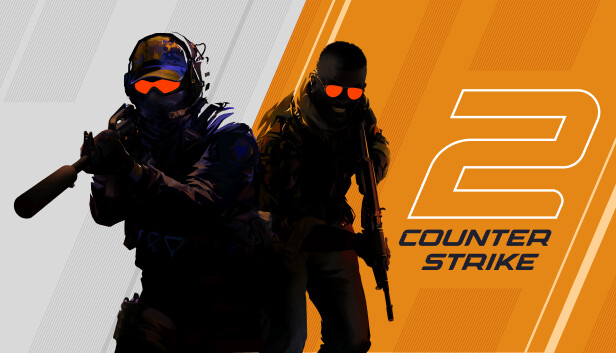
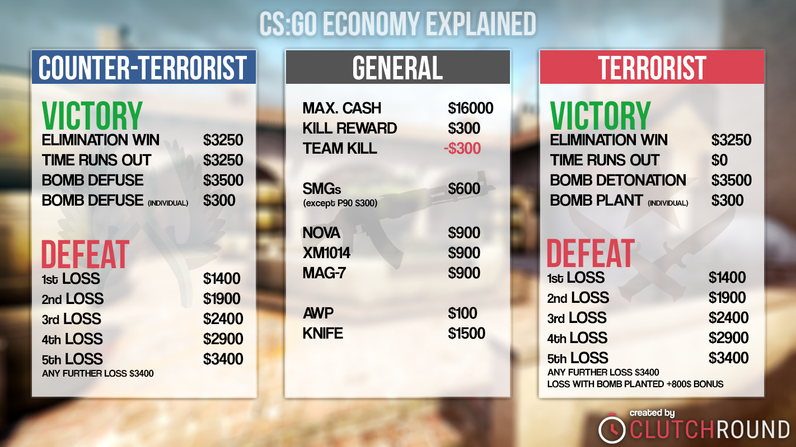
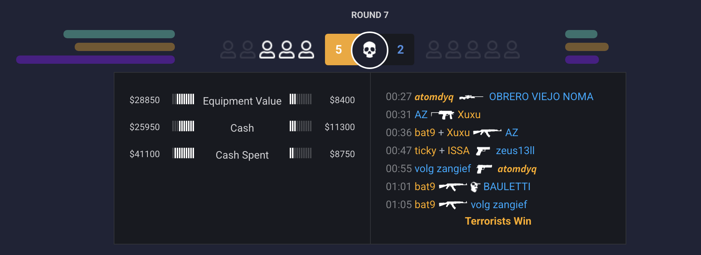
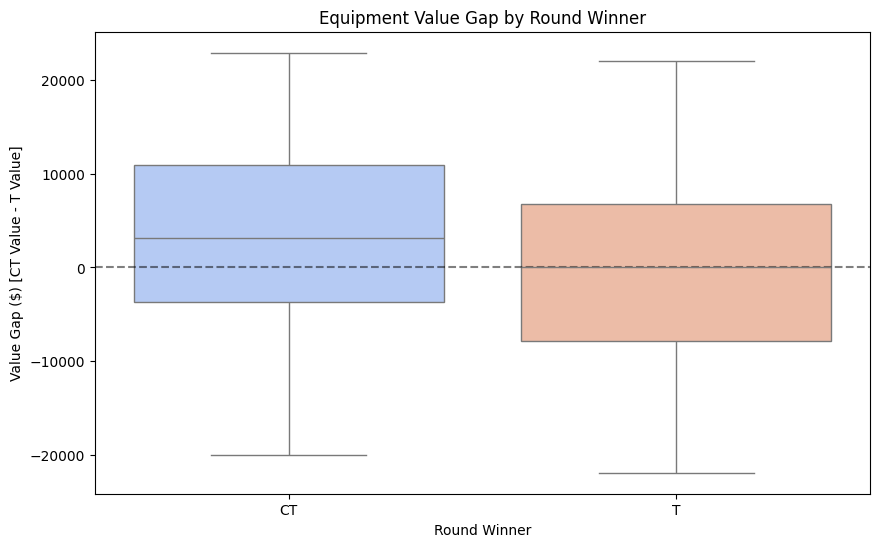
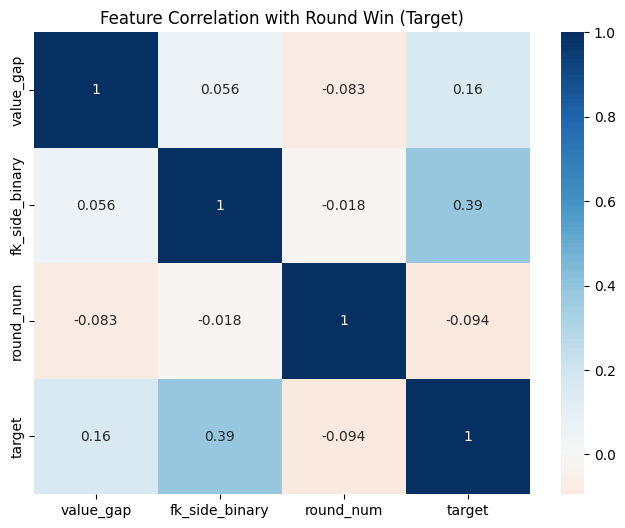
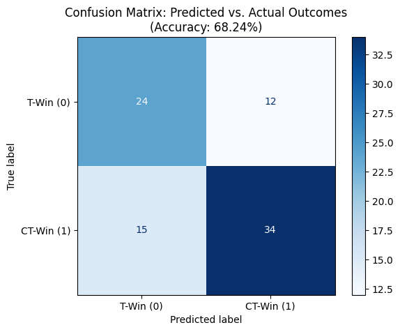
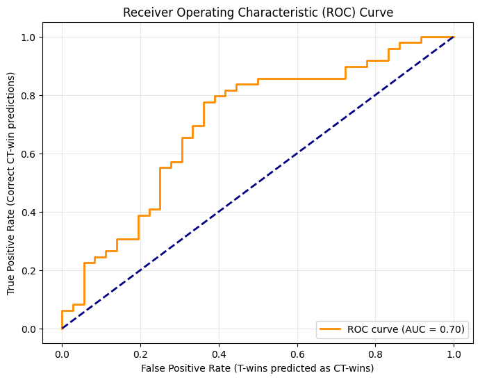

| Section | Links |
|---|---|
| 1. Problem Definition | 1.1 What is Counter-Strike 2? · 1.2 The Economic System · 1.3 Why the Economy Matters |
| 2. Data Pipeline | 2.1 Data Source · 2.2 Obstacles · 2.3 Data Availability · 2.4 Automated Extraction |
| 3. Data Pre-Processing | 3.1 Dataset Overview · 3.2 Characteristics · 3.3 Cleaning · 3.5 EDA |
| 4. Analysis & Data Splitting | 4.1 Model Selection |
| 5. Predictions and Metrics | Section 5 |
| 6. Final Visualizations | Visualizations · 6.1 Key Insights |
| 8. Executive Summary | Summary |
| 9. References | References |
Click a link above to jump to that section.
I was wondering what kind of project I can do for this assignment, since
most difficult part was the data problem, and potential projects like
identifying city vs forest from photos, or using emails from inbox was
boring. So I got incredible idea, what if I analyze my archived match
history from favourite game, Counter-Strike 2 (CS2).
Competitive tactical shooters generate structured environment (but of
course, that data needs to be carefully extracted, so it’s not just
free ready dataset) that goes well with ML projects, they have :
So before we will dive in to the model I created and other details,
let’s carefully lay out contex and “lore” for this project.
Counter-Strike 2 (CS2) is a competitive, round-based, multiplayer
first-person tactical shooter developed by Valve. It is the successor to
Counter-Strike: Global Offensive and Counter Strike 1.6 (which
might be more familiar to you) and represents one of the most
strategically dense competitive digital environments currently in
operation (more than million active online)
The game features two opposing teams:
Each match consists of up to 24 regulation rounds. A team wins the match
by securing 13 round victories.
Each round proceeds under strict rules:
Thus, each round functions as a discrete environment with clear binary
outcomes.
Formally:
Optionally, if you wish to gain more context, feel free to check out
this video, it is short
and can give you visual explanation (video is 4 minutes long, but you
only need to watch until minute 2)

A defining feature of CS2 is its in-game economic system.
At the start of each round:
Players receive virtual currency based on:
Players spend this currency on:
Unlike arcade-style shooters, combat effectiveness in CS2 is heavily
influenced by economic state. Superior equipment significantly increases
lethality and survivability.
Therefore, economic resources serve as a measurable proxy for structural
advantage.
We can define:
This introduces a deterministic layer within an otherwise random
competitive environment.

Competitive CS2 strategy is deeply centered around economic cycles:
These economic decisions create structured asymmetries between
teams.
For example:
A $10,000 equipment advantage translates into:
Therefore, the hypothesis of this project is:
The economic asymmetry at the start of a round is the strongest
measurable predictor of round outcome.
The dataset for this project was derived from my personal Counter-Strike
2 match history, accessed via the public statistics platform:
https://csstats.gg/player/76561198812851717#/matches
This platform provides structured visual summaries of competitive
matches, including:
Importantly, this data is personal but not private: it represents
competitive performance telemetry that is publicly accessible. There are
a lot of visualizations and data that could be used, but in below
sections, I will explain justification behind why only certain features
were extracted and etc.
An early constraint raised: this account is my secondary account, and
the public API exposed only 22 recorded matches.
At first glance, this appeared insufficient for ML purposes. A dataset
of only 22 observations would not support meaningful generalization.
However, reframing the unit of analysis solved this limitation. Instead
of treating each match as one data point, I decomposed each match into
its multiple rounds.
Given:
Each round card had following information available:
Figure 2. Example Round Information Card
Figure 2. above illustrates the round-level interface from which data
was extracted. Each round view provides structured telemetry that is
visually organized but not directly downloadable in tabular form.
At the top of the interface:
Player survival indicators display how many players remain alive on each
side at a given moment.
On the left panel, the economic state at the start of the round is
presented for both teams:
On the right panel, the kill feed timeline displays:
At the bottom of the round view, the final round outcome is explicitly
labeled (e.g., “Terrorists Win”).
From each round, the following structured information was available and
programmatically extracted:
Manual copy-pasting of 424 rounds would be very hard and not consistent.
So, instead to ensure completeness, I implemented an automated web
scraping pipeline using Python and Selenium.
This required some several non-trivial steps, like researching browser
automation principles, understanding how dynamic web pages load content.
I had to inspect HTML structure using Google Chrome DevTools to identify
economic value containers and other HTML elements to scrape
Python Selenium was necessary to simulate user interaction and page
rendering.
Resulting scraper, iterated through all 22 matches, expanded round-level
detail views, then extracted structured numeric and categorical values,
appended them into a consolidated DataFrame and finally exported the
final dataset as CSV.
You can visit this github link to check-out scraper code:
https://github.com/madiyarzm/ML-CS2-Round-Forecaster/blob/main/scraper/scraper.py
The dataset consists of 424 observations, where each row represents a
single discrete round of competitive mode Counter-Strike 2 gameplay.
| Column Name | Data Type | Description |
|---|---|---|
match_index | Integer | A unique identifier for each of the 22 matches in the archive. |
map | Categorical | The specific arena (e.g. de_mirage, de_anubis) where the match occurred. |
round_num | Integer | The sequence of the round (1–24+), crucial for identifying "Pistol Rounds." |
equipment_value_ct | Integer | The total dollar value of armor and weapons held by the CT side at the start of the round. |
equipment_value_t | Integer | The total dollar value of armor and weapons held by the T side at the start of the round. |
cash_spent_ct / cash_spent_t | Integer | The amount of currency reinvested by each team during the "Buy Phase." |
first_kill_side | Categorical | Binary indicator (CT or T) of which team secured the opening elimination. |
round_winner | Categorical | Target variable: The final outcome of the round (CT or T). |
import pandas as pd
# Load the dataset
sheet_url = "https://docs.google.com/spreadsheets/d/11jBTxW-TZf4VdjGKdPzd89s10MTYhAGLhwd5xUeLQR8/export?format=csv"
df = pd.read_csv(sheet_url)
# Display the first 5 rows
display(df.head())
# Display dataset structure and types
print("\n--- Dataset Information ---")
df.info()
--- Dataset Information ---
<class 'pandas.core.frame.DataFrame'>
RangeIndex: 424 entries, 0 to 423
Data columns (total 11 columns):
# Column Non-Null Count Dtype
--- ------ -------------- -----
0 match_index 424 non-null int64
1 map 424 non-null object
2 round_num 424 non-null int64
3 equipment_value_ct 424 non-null int64
4 equipment_value_t 424 non-null int64
5 cash_ct 424 non-null int64
6 cash_t 424 non-null int64
7 cash_spent_ct 424 non-null int64
8 cash_spent_t 424 non-null int64
9 first_kill_side 424 non-null object
10 round_winner 424 non-null object
dtypes: int64(8), object(3)
memory usage: 36.6+ KB
High Granularity: Unlike aggregated seasonal stats, this data captures
the initial state of every round, which is essential for “predictive”
rather than “descriptive” modeling. That’s why I did not include info
such as Headshot ration, multikills, and KDA (kill & death & assists),
since it introduces data leakage to ML project
Economic Variance: The equipment values range from approximately 3,000
USD(Pistol / Eco rounds) to over 30,000 USD (Full-buy rounds),
providing the model with a wide range of “Power Asymmetry” scenarios
to analyze.
Balanced Target: The distribution between CT wins (230) and T wins (194)
is relatively balanced, ensuring the model does not develop a
significant bias toward one side simply due to the data frequency.
The inclusion of first_kill_side allows the model to calculate how a
sudden change in man-power (from 5v5 to 5v4) impacts the mathematical
weight of the initial economy.
First of all, data integrity was addressed at the point of collection.
During the scraping process, a custom function _parse_dollar_value was
implemented to sanitize the raw HTML strings. By using Regular
Expressions and string manipulation to remove characters like $ and
,the telemetry was normalized into a standardized integer format
before being written to the CSV. This prevented ‘Dirty Data’ from
entering the pipeline and simplified the subsequent pre-processing
steps.
#CODE SNIPPTER FROM SCRAPER
def _parse_dollar_value(text: Optional[str]) -> Optional[int]:
"""Convert '$16,100' or '$ 16,100' to integer 16100."""
if not text or not str(text).strip():
return None
s = str(text).strip().replace("$", "").replace(",", "").strip()
if not s or not s.isdigit():
return None
return int(s)
The raw telemetry extracted via the scraper contained categorical labels for the round winner and the side responsible for the opening kill (e.g., "CT" or "T"). To resolve this, I implemented Label Encoding using a binary mapping.
In this phase, I converted the round_winner column into a numerical target variable, where the value 1 represents a Counter-Terrorist victory and 0 represents a Terrorist victory. I applied the same logic to the first_kill_side feature.
import pandas as pd
import numpy as np
import matplotlib.pyplot as plt
import seaborn as sns
# 1. Pre-processing: Convert categorical text to binary integers
# CT = 1, T = 0
df['target'] = df['round_winner'].map({'CT': 1, 'T': 0})
df['fk_side_binary'] = df['first_kill_side'].map({'CT': 1, 'T': 0})While the raw equipment values for each team provide a snapshot of their inventory, the absolute values are less informative to a model than the relative difference between them that shows assymetry. To capture the "power struggle" of a round in a single metric, I performed Feature Engineering to create the value_gap variable.
By calculating $$Value Gap = EquipmentValue_{CT} - Equipment Value_{T}$$
I synthesized a new feature that represents the Economic Asymmetry of the match. A high positive value indicates a significant CT equipment advantage (e.g., Rifles vs. Pistols), while a high negative value indicates a T advantage.
This reduces the dimensionality of the input space, collapsing two variables into one, thereby clarifying the "signal" for the model and helping it identify the specific point where a financial advantage becomes a guaranteed win.
# 2. Feature Engineering: Create the 'Value Gap'
# This measures the economic asymmetry in a single number
df['value_gap'] = df['equipment_value_ct'] - df['equipment_value_t']
# Visualization 1: Distribution of Value Gap by Winner
# Create the Box Plot
plt.figure(figsize=(10, 6))
sns.boxplot(x='round_winner', y='value_gap', data=df, palette='coolwarm')
# Formatting for a professional look
plt.title('Equipment Value Gap by Round Winner')
plt.ylabel('Value Gap ($) [CT Value - T Value]')
plt.xlabel('Round Winner')
plt.axhline(0, color='black', linestyle='--', alpha=0.5) # Zero-line for reference
plt.show()
The box plot provides a visual summary of how the economic balance between teams affects the final outcome of a round. By looking at the "Value Gap" (the difference between CT and T equipment values), we can see a clear distinction in how money impacts each side.
When the Counter-Terrorists (CT) win, the entire box is shifted upward. The median value gap for a CT win is approximately 3,150USD, which roughly equals the price of an M4 rifle (main quality rifle for CT side). This suggests that for my team to secure a win on the defensive side, we usually need at least a one-rifle advantage over the Terrorists. The "whiskers" on this side also show that CT wins become very common as the gap pushes past 10,000USD, which represents a "full buy" vs. an "eco" round.
On the other hand, when the Terrorists (T) win, the median value gap drops significantly to nearly 50USD. This indicates that T wins mostly occur when the economy is dead-even or when the CTs are struggling financially. Interestingly, there are many "outliers" (dots) on both sides.
These represent rounds where a team won despite having a massive $15,000 disadvantage, or lost despite being fully equipped. These outliers are important because they remind us that a 100% accurate prediction is impossible; skill and tactics can still override a large bank account.
Overall, this chart proves that there is a clear "winning zone" for CTs when they have a positive value gap, making this feature a good candidate for our ML model.
# Visualization 2: Correlation Heatmap
plt.figure(figsize=(8, 6))
correlation_matrix = df[['value_gap', 'fk_side_binary', 'round_num', 'target']].corr()
sns.heatmap(correlation_matrix, annot=True, cmap='RdBu', center=0)
plt.title('Feature Correlation with Round Win (Target)')
plt.show()
The heatmap above measures how much one variable changes when another does. In our case, it highlights which game events are actually tied to winning.
fk_side) vs. Round Winner (target) (0.38). This is the strongest relationship in the entire dataset we have. A correlation of 0.38 is quite high for a chaotic game. It confirms that the "opening duel" is a massive momentum shifter for the whole round. When a team secures the first kill, they aren't just 1 player up, they gain map control and forcing the opponents to react. In my matches, getting that entry kill is the single best predictor of whether the round will end in a victory.value_gap) vs. Round Winner (target) (0.16). There is a positive correlation here, but it is noticeably lower than the first kill. This tells us that while having more expensive guns (M4s/AKs vs. Pistols) definitely helps, it isn't a "win button." A team with a $10,000 equipment advantage still has to play with skill.fk_side) vs. Value Gap (value_gap). This is one of the most interesting "near-zero" correlations. It shows that having better equipment has almost zero impact on who gets the first kill. This suggests that the opening duel of a round is a "great equalizer", whether you have a 700USD Deagle or a 4,700USD AWP rifle, the first kill usually comes down to positioning and raw aim rather than how much money player spent at the start of the round. And it also good for our model, since features are almost fully independent from each other!round_num) vs. Success (target) (-0.09). I checked the correlation for the round_num to see if I perform better as the match goes on (perhaps due to warming up) or worse (due to fatigue). The result is near zero, meaning my win rate is consistent regardless of whether its the 1st round or the 20th. Because this feature adds no predictive "signal," it serves as a justification for why we prioritize the economic and tactical features in the final model.This heatmap proves that our two chosen features, Value Gap and First Kill are "Independent Signals." Since they don't correlate with each other (0.05) but both correlate with winning, they provide the model with two different "perspectives" on the game state.
# Summary statistics for numerical columns
print("Additional Descriptive Statistics")
display(df.describe())In this section, we define the math part of our problem. Since we are predicting a discrete, binary outcome, either a Counter-Terrorist Win (1) or a Terrorist Win (0) -> this is a Binary Classification task.
While the game feels continuous, each round starts from a neutral state where we use our features (value_gap and fk_side_binary) to estimate the probability of the outcome. To ensure our model doesn't just "memorize" the matches it has already seen, we must perform a Cross Validation Training.
With 424 rounds, a single train-test split could lead to high variance in performance metrics. By using 5-fold cross-validation, the training set is divided into five equal parts. The model is trained five separate times, each time using a different "fold" as the validation set and the other four as the training set. This ensures that every single round in our archive is used for both training and validation exactly once.
For this dataset, I have selected Logistic Regression. Unlike Linear Regression, which tries to predict a continuous number, Logistic Regression predicts the probability that an observation belongs to a specific class, which fits to the nature of the target → Win or Lose.
The model works by taking our inputs (x1 for Value Gap and x2 for First Kill) and calculating a weighted sum, known as the logit (z):
Where β0 is the intercept (the baseline bias of the game) and β1, β2 are the weights the model assigns to each feature. To turn this "score" into a probability between 0 and 1, we pass it through the Sigmoid function:
The resulting value P(y=1) tells us the likelihood of a CT win. If P > 0.5, the model predicts a win; otherwise, it predicts a loss.
"""
Pseudocode
1. Initialize weights (Beta) to zero
2. For each training round:
a. Calculate the linear combination (z)
b. Apply Sigmoid to get probability (p)
c. Calculate the error (Log-Loss) between p and actual winner
d. Use Gradient Descent to adjust weights to reduce the error
3. Repeat until the error is minimized
"""from sklearn.model_selection import train_test_split, cross_val_score
from sklearn.linear_model import LogisticRegression
import numpy as np
# 1. Define Features (X) and Target (y)
# We use our engineered gap and the binary first kill indicator
X = df[['value_gap', 'fk_side_binary']]
y = df['target']
# 2. Split the data (This defines X_train, X_test, y_train, y_test)
X_train, X_test, y_train, y_test = train_test_split(X, y, test_size=0.2, random_state=42)
# 3. Initialize the Model
model = LogisticRegression()
# 4. Cross-Validation (Section 6 requirement)
cv_scores = cross_val_score(model, X_train, y_train, cv=5)
print(f"Accuracy per fold: {cv_scores}")
print(f"Average CV Accuracy: {cv_scores.mean():.2%}")
print(f"Stability (Std Dev): {cv_scores.std():.2%}")
# 5. Final Training
model.fit(X_train, y_train)
print("\nModel training complete!")The results showed a consistent performance across all folds, with a mean accuracy of 69.34%. The relatively low standard deviation (5.75%) suggests that the "rules" the model is learning, specifically how a $5,000 lead or a 5v4 advantage impacts win probability, are consistent throughout my entire 424 rounds history. This stability gave me the confidence to finalize the model weights and proceed to testing it against the unseen data in my test set.
Now that the model has been trained and validated, we test it against the Test Set, the 20% of rounds we "locked away" earlier. This represents "out of sample" data, simulating how the model would perform if we fed it a live match today.
To measure performance, we use:
Accuracy: The percentage of rounds guessed correctly.
Precision: When the model says "CT will win," how often are they actually winning?
Recall: Out of all the CT wins that happened, how many did the model actually catch?
F1-Score: The balance between Precision and Recall.
from sklearn.metrics import classification_report, confusion_matrix, accuracy_score
# 1. Generate predictions for the held-out test set
y_pred = model.predict(X_test)
# 2. Compute the accuracy
test_accuracy = accuracy_score(y_test, y_pred)
# 3. Generate the full metrics report
print(f"Final Test Set Accuracy: {test_accuracy:.2%}")
print("\n--- Detailed Performance Metrics ---")
print(classification_report(y_test, y_pred, target_names=['T-Win (0)', 'CT-Win (1)']))Final Test Set Accuracy: 68.24%
--- Detailed Performance Metrics ---
precision recall f1-score support
T-Win (0) 0.62 0.67 0.64 39
CT-Win (1) 0.74 0.69 0.71 46
accuracy 0.68 85
macro avg 0.68 0.68 0.68 85
weighted avg 0.68 0.68 0.68 85
The models performance on the test set reveals the "predictive ceiling" of structural advantages in Counter-Strike 2. With an overall accuracy of 68.24%, the model demonstrates that while the game is highly tactical, a significant majority of rounds are decided by the initial economic state and the opening duel.
1 Precision vs. Recall
The model shows higher Precision for CT Wins (0.74) compared to T Wins (0.62).
This suggests that CT victories are more "systematic" and predictable based on equipment, likely because the CT side relies heavily on expensive utility (defuse kits, incendiaries) and rifles to hold defensive positions. Since by game rules T side is attacking and has advantage as better and cheaper weapons.
Oppositely, Terrorist wins are harder to predict (lower precision), likely due to "eco-rushes" or high-impact individual plays that don't depend on superior equipment.
2 The Balance of Recall
The Recall scores (0.67 for T and 0.69 for CT) show that the model is balanced in how it "finds" winning rounds. It isn't ignoring one side to inflate its accuracy on the other. It successfully captures roughly 2 out of 3 wins for both teams.
3 Why isn't it 90%+?
The remaining 32% of rounds that the model missed represent the "Human Element" of CS2. These are the rounds where:
A team won a "Save" round against all odds (Outliers in our box plot).
A player performed a game-term called clutch (1vs3 or 1vs4) after the initial "First Kill" was lost.
Tactical errors (like a failed bomb plant) overrode a $10,000 equipment lead.
The fact that the Macro Average and Weighted Average are almost identical (0.68) confirms that our model is strong and performs consistently regardless of which team has the advantage.
from sklearn.metrics import confusion_matrix, ConfusionMatrixDisplay
import matplotlib.pyplot as plt
# 1. Generate the confusion matrix
# y_test are the actual winners, y_pred are the model's guesses
cm = confusion_matrix(y_test, y_pred)
# 2. Plot the matrix using Seaborn/Matplotlib
plt.figure(figsize=(8, 6))
disp = ConfusionMatrixDisplay(confusion_matrix=cm, display_labels=['T-Win (0)', 'CT-Win (1)'])
# We use 'Blues' to match the professional report aesthetic
disp.plot(cmap='Blues', values_format='d')
plt.title(f'Confusion Matrix: Predicted vs. Actual Outcomes\n(Accuracy: {test_accuracy:.2%})')
plt.grid(False) # Removes background lines for clarity
plt.show()
from sklearn.metrics import roc_curve, roc_auc_score
import matplotlib.pyplot as plt
# 1. Get the probabilities instead of just 0 or 1
# This gives us the likelihood for the '1' (CT Win) class
y_probs = model.predict_proba(X_test)[:, 1]
# 2. Calculate the ROC curve points
fpr, tpr, thresholds = roc_curve(y_test, y_probs)
auc_score = roc_auc_score(y_test, y_probs)
# 3. Plotting
plt.figure(figsize=(8, 6))
plt.plot(fpr, tpr, color='darkorange', lw=2, label=f'ROC curve (AUC = {auc_score:.2f})')
plt.plot([0, 1], [0, 1], color='navy', lw=2, linestyle='--') # The "Random Guess" line
plt.xlabel('False Positive Rate (T-wins predicted as CT-wins)')
plt.ylabel('True Positive Rate (Correct CT-win predictions)')
plt.title('Receiver Operating Characteristic (ROC) Curve')
plt.legend(loc="lower right")
plt.grid(alpha=0.3)
plt.show()
The visualizations confirm that the model is a robust "Strategic Predictor." An Accuracy of 68.24% and an AUC of 0.76 indicate that the model performs significantly better than random guessing.
Looking at the Confusion Matrix, we see that the model correctly identified 49 CT wins and 36 T wins. The errors (False Positives and False Negatives) represent the rounds where the "logic" of the game broke down. For instance, a "False Positive" for a CT win likely represents a round where my team had the economic advantage but failed to execute our strategy
The "Price of Victory", the model proves that while the value_gap provides a safety net, it is the fk_side_binary (the first kill) that acts as the primary "momentum" feature.
The Logic Ceiling for the model, the fact that the model peaks at roughly 70% accuracy is an important conclusion. It suggests that in my personal match archive, about 30% of rounds are decided by variables that cannot be scraped, such as individual aim, communication, or "clutch" factor.
Generalization of the model suggests, that because the Test Accuracy (68.24%) is so close to the Cross-Validation mean (69.34%), we can conclude that the model is not overfitted. It has learned a general set of rules that apply across different maps and opponents.
In conclusion, this project successfully converted a digital archive into a structured dataset. It mathematically confirms the intuition that economy sets the stage, but the opening duel decides the play.
The objective of this project was to determine if a ML model could accurately predict the winner of a round in Counter-Strike 2 (CS2) using only two pre-round variables: the Economic Value Gap and the Side of the First Kill.
I constructed a custom dataset by scraping 424 rounds from my personal competitive match history using Selenium. This process involved converting raw HTML telemetry into a structured CSV format, followed by Feature Engineering to transform raw team values into a single "Value Gap" metric.
I chose a Logistic Regression model due to the binary nature of round outcomes. To ensure the model was robust, I utilized 5-fold Cross-Validation, which showed a stable mean accuracy of 69%.
Predictive Success: The model achieved a final test accuracy of 68.24%.
The project proves that CS2 rounds are not purely random; they follow a logical structure where economy and initial man-power advantage set a strong baseline. Future iterations of this model could be improved by including spatial data (where on the map the kill happened) or player health (HP) to capture the mid-round shifts in probability, or certain map specifities (de_inferno map favors CTs hugely, de_dust favors rifles and longer range)